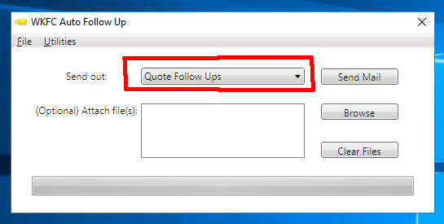
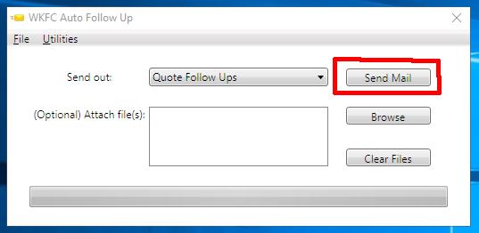

From the dropdown menu, select the line of business to follow up with. The only available choices are Quote Follow Ups (for new and renewal business with WKFC) and CorRisk Quote Follow Ups.
Click the "Send Mail" button. Once clicked, the program will collect the follow ups that need to be sent out, remove any duplicates, build and send emails for each entry pulled from IMS, and write the results of what was sent out to an Excel spreadsheet.
Unfortunately, the only thing the program is able to currently do is send out the emails and write a receipt of what
was sent out to a spreadsheet. You will have to clear the notes out by hand and drag & drop the emails as usual.
Click "File" and "Access Excel Records" to open up the folder where the excel records are kept. The excel files
are sorted by date and are in the format: Follow Ups for [date in MM-DD-YYYY]